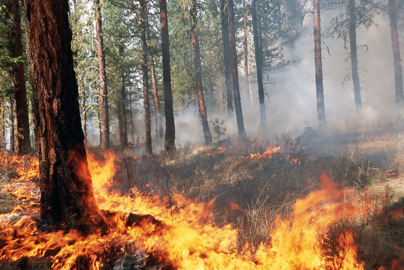

Predicting Wildfire Smoke Composition
Contents

Predicting Wildfire Smoke Composition#
Prof. Jen is a world-expert at understanding the composition and wildfire smokes. In 2017, she was part of an experimental campaign to map the composition of smokes for controlled wildfire burns for several specific plots of forest at the Blodgett Forest Research Station in Georgetown, CA.
Prof. Jen and her collaborators exposed filters to the burns at either ground level or at elevation using remote-controlled drones (each drone had three filters). They then took those filters and used a special analytic technique (GCxGC/MS, which you probably learned about in analytical chem) to identify unique spectral signatures of compounds present in the filters. In a few cases they know the compounds that generate specific signatures, but in many cases it’s unclear exactly which compound led to a specific GCxGC/MS signature.
Note
Wildfire dataset summary:
3 different plots of land (with labels 60, 340, 400) were burned. One unburned plot was also included as a control (0).
Each plot was sampled multiple times at varying times.
Plots were sampled at the ground level in triplicate (3 filters)
Plots were sampled with drones at elevation in triplicate (3 filters)
All filters were collected and analyzed with GCxGC/MS. The unique ID of blobs present and the associated concentration on the filter were recorded.
The prevalent plants and foliage present in each plot is also known based on a previous survey of the regions.
See also
You can read more about how one of Prof. Jen’s collaborators analyzed this data here. That same site includes both a paper and a short video by a collaborator on the specific analysis tried.
Suggested challenges#
Given a filter and a set of observed blobs, predict whether that filter was exposed at ground level or at elevation (with a drone)
Given the filter of a filter at elevation (drone, easy to collect data), predict the blobs and their concentrations for the ground level measurements (harder to collect data)
[much harder] Given the filter and a set of observed blobs, predict the types of plants present in the plot of land
Note
In each case, you should think critically about the question how you want to set up your train/validation/test splits to simulate the challenge.
What do you expect to be correlated?
How would you know if your model is helpful?
Is there any way to cheat at the task?
Dataset download/availability instructions#
Dataset/file format details#
BlodgettCombinedBlobMass.csv is a spreadsheet that gives the electron ionization mass spectrum for each compound detected during the Blodgett field campaign.
The mass spectrum (each element) is written as mass, signal; mass, signal; etc.
The row number corresponds to the compound of the same row number found in BlodgettCombinedBlobTable.csv
BlodgettCombinedBlobTable.cvs contains all compound 2 dimension gas chromatography data from all samples collected from Blodgett 2017. The column headings are:
Unused tag
BlobID_1
Unused Tag
1D retention time (min)
2D retention time (sec)
Peak height
Peak volume
Peak volume divided by nearest internal standard peak volume
Calculated d-alkane retention index
matched retention index (this number should be super close to the retention index in column 9)
Unused tag
Unused tag
Unused tag
BlobID_2
Filter number. This is the filter number that can be linked to where and when the sample was collected
Unused tag
Mass concentration of this compound (ng/m3)
BlobID_1 and BlobID_2 (column 2 and 14) define the unique ID of a blob that can be tracked across the different burns. In other words, a compound (blob) with an ID of 1,176 is the same compound in filter 201 and filter 202.
The d-alkane retention index (column 10) and 2nd dimension retention time (column 5) define the unique x,y position the compound sits in the chromatogram. No two compounds will have the same x,y coordinate.
Mass concentration defines the amount of compound that exists in the smoke.
Run Log.xlsx details where each filter was collected in Blodgett by GPS location and forest plot that burned. Tab “Flight Log” provides the details of filters collected from the drone. Tab “ground Station” provides details of filters collected at ground level.
All_Shrubcovony_01_16.xlsx displays the types of shrubs that grew at Blodgett. The sheet of interest is “16” which stands for 2016 when they conducted a plant inventory. Focus on Unit (1st column) 60, 340, and 400 which stand for the plots that we burned at Blodgett. Species column lists the shorthand for the shrub/grass that they observed growing in the plot. BFRSPlantCodes.xlsx translate the shorthand plant code to a real plant.